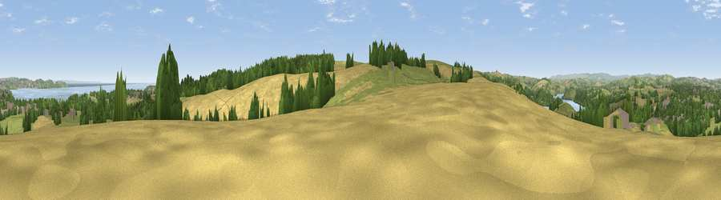

Viewpoint near Galmpton
#7767 in England · top 19% of its area beats it · near GalmptonThe view, rendered

A 360° render of this exact spot computed from the terrain model, tree cover and land cover — summer colours, afternoon light, calibrated against photographs of famous viewpoints. Real trees, hedges and buildings will differ in detail.
The panorama
Grey silhouette: terrain skyline in each direction (720 bearings, Earth curvature and refraction included). Dashed green: skyline with trees (+15 m) and buildings (+8 m) as obstacles. Blue strip: how far the ground is visible on each bearing.
Where the view opens
Wedge length = distance to the farthest visible ground on that bearing (vegetation-aware). Rings at 10, 25 and 50 km.
What fills the view
36% grassland · 26% woodland · 21% cropland · 9% water · 7% built-up
Angular shares of the visible panorama (visual magnitude), not map area. Landscape diversity 0.63 (0–1 Shannon).
Key numbers
More beautiful places nearby
The staircase of upgrades: each row has a higher view potential than everything closer. Driving times are estimates from straight-line distance, calibrated against real road routing — check an actual route before setting out.
| Place | Direction | Drive | Score |
|---|---|---|---|
| Viewpoint near Kingswear | S · 2 km | ~6 min | 76.8 |
| Viewpoint near Kingswear | SE · 5 km | ~10 min | 82.2 |
| Viewpoint near Kingswear | SSE · 5 km | ~10 min | 83.8 |
| Viewpoint near Stokeinteignhead | NNE · 15 km | ~27 min | 84.1 |
| Viewpoint near East Prawle | SSW · 23 km | ~38 min | 84.6 |
| High Peak | NNE · 37 km | ~56 min | 85.3 |
| Golden Cap | NE · 63 km | ~86 min | 88.7 |
| The Knoll | ENE · 72 km | ~95 min | 91.0 |
50.38729, -3.55872 · source: osm peak · position refined by local search. Computed location — check access rights before visiting.